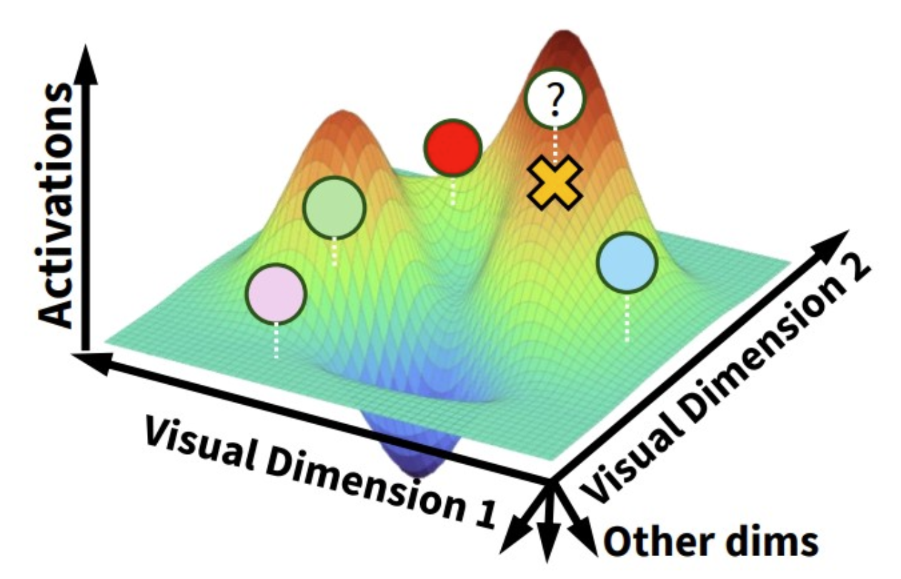
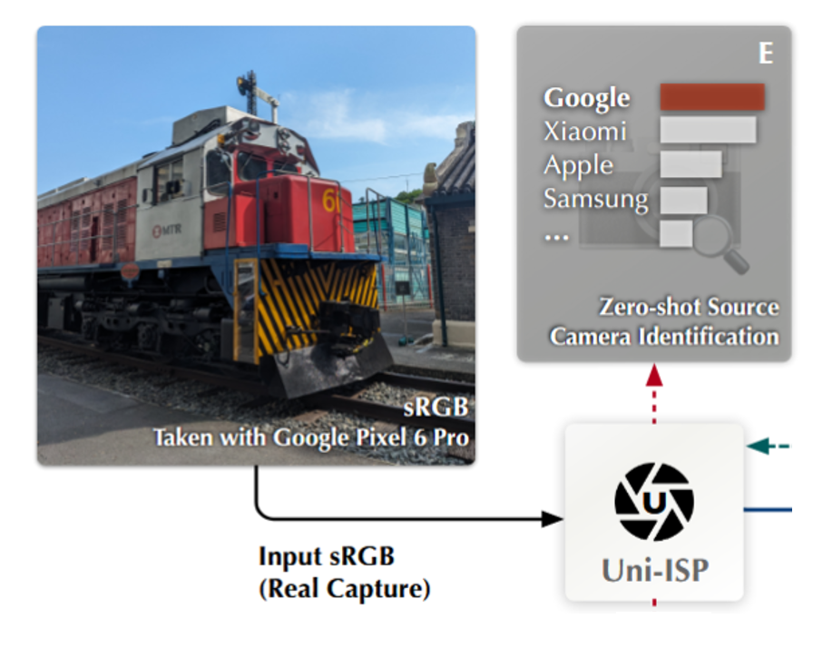

Biography
I'm Muquan Yu (喻牧泉), a final-year undergraduate student at the Chinese University of Hong Kong, majoring in Computer Science. My research interests are in Brain-Inspired AI and NeuroAI.
- 🌱 I'm currently learning Computational Neuroscience, Computer Vision, and Deep Learning.
- 👯 I'm looking to collaborate on AI for Neuroscience and Brain-Inspired AI projects!
News
- [2025.11] 🎉 One paper submitted to CVPR 2026, hoping for a good result!
- [2025.10] 🏆 I was awarded the Yao Fellowship, the highest honor in CSE department at CUHK！
- [2025.09] 🎉 One paper accepted by NeurIPS 2025.
- [2025.08] 🎉 One paper accepted by IEEE Transactions on Image Processing.
- [2025.07] 🚀 I have launched my personal website, stay tuned for more updates!
Blogs
- 🐞 Debug Diaries
A log of my debugging experiences, solutions, and lessons learned from various technical challenges. - 📒 Tech Field Notes
Notes on various technical domains, tools, and best practices. - Code & Commands
A collection of my notes on programming languages and Linux command-line tools.
Research

Uni-ISP: Towards Unifying the Learning of ISPs from Multiple Mobile Cameras
IEEE Transactions on Image Processing